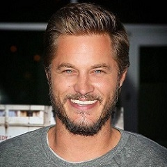
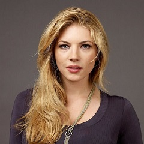
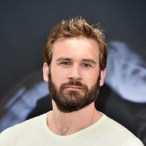
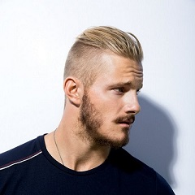
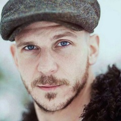

Acteurs principaux
Travis Fimmel

Travis Fimmel est un
acteur australien, né le
15 juillet 1979 à
Echuca dans l'État de Victoria (Australie).
Après s'être fait remarquer en tant que
mannequin à l'occasion d'une campagne publicitaire pour
Calvin Klein, il abandonne cette carrière pour devenir acteur. Il apparaît dans quelques longs métrages et
tient l'un des premiers rôles de la série télévisée
The Beast, rapidement annulée, avant de connaître la célébrité en interprétant le rôle principal de la série
Vikings sous le nom de
Ragnar Lothbrock.
Katheryn Winnick

Katheryn Winnick est une actrice
canadienne, née le
17 décembre 1977 à
Etobicoke (Ontario).
Katheryn, née à Etobicoke, en Ontario, est d'ascendance ukrainienne. Pendant son enfance et jusqu'à ses huit ans, elle
ne parle qu'ukrainien et apprend l'anglais à partir de cet âge. Elle commence à recevoir une formation dans les
arts martiaux à sept ans et obtient sa première ceinture noire à l'âge de treize ans. À 21 ans, elle maîtrise
trois styles d'arts martiaux différents. Avant d'entamer une carrière d'actrice, elle est
garde du corps, ce qui de son aveu lui a été très utile pour son rôle dans la série
Vikings.
Clive Standen

Clive Standen né le
22 juillet 1981 à
Holywood, est un acteur britannique. Il est surtout connu pour l'interprétation de
Archer dans la troisième saison de la série télévisée
Robin des Bois et pour le rôle de
Rollo dans
Vikings.
Il est né sur une base de l'armée britannique à Holywood, (comté de Down), en Irlande du Nord. À l'âge de deux ans,
il a déménagé à Leicestershire dans les
East Midlands. Il est allé à l'école
King Edward VII (Melton Mowbray), puis a suivi un stage au théâtre. Clive est aussi
cascadeur, ses premières expériences de cascades et de combats à l'épée ont été à l'âge de 12 ans.
Standen a obtenu son premier poste de travail dans une équipe de cascadeurs professionnels.
Alexander Ludwig

Alexander Ludwig, né le
7 mai 1992 à
Vancouver (Canada), est un acteur canadien. Il est notamment connu pour ses rôles de
Shane Patton dans Du sang et des larmes, de Cato Hadley dans le premier volet d'
Hunger Games et de Björn Côtes-de-Fer dans la série télévisée
Vikings.
Alexander Ludwig a un frère et deux sœurs dont il est l’aîné :
Natalie et Nicholas, qui sont jumeaux, et Sophia. Sa mère,
Sharlene, était
actrice, et son père,
Harald Horst Ludwig, un
homme d'affaires. Il a été attiré par la profession, disant dans une interview « J'ai une très grande imagination.
J'aime me produire. Pourtant, en dépit du début de carrière de sa mère en tant qu'actrice, Alexander a dû convaincre
ses parents de soutenir son désir de poursuivre une carrière en tant qu'enfant acteur.
Gustaf Skarsgård

Gustaf Skarsgård /ˈskɑːʂɡoːɖ/ (né le
12 novembre 1980) est un acteur
suédois. Il est le fils de l'acteur
Stellan Skarsgård et le frère d'
Alexander Skarsgård et
Bill Skarsgård.
Très jeune, il effectue sa première apparition dans Nom de
Code: Coq Rouge face à son paternel. Sa confrontation avec
Andreas Wilson dans le poignant et terrifique
Ondskan reste en mémoire. Il campe un tyran qui s’enorgueillit de l’humiliation d’autrui. En couple avec un
homme dans
Patrik 1,5, Gustaf Skarsgård montre toute la variété de son jeu. Ce caméléon traverse des aventures éprouvantes
tant dans
Les Chemins de la liberté que dans
Kon-Tiki. Sa gestuelle et ses expressions le placent idéalement pour incarner le funambulesque
Floki, fidèle compère de
Ragnar dans
Vikings. Ce personnage, qui suggère certaines similitudes avec le célèbre
Joker de Batman, sied parfaitement à ce comédien véritablement habité.
En production
Vikings : une saison 5 déjà en préparation !
La saison 5 de
Vikings aura bien lieu et la chaine
History a déjà commandé une nouvelle saison avec
20 épisodes.
Ainsi,
Michael Hirst, le showrunner de la série, prépare déjà la nouvelle saison qui sera diffusée à partir du
29 novembre 2017.